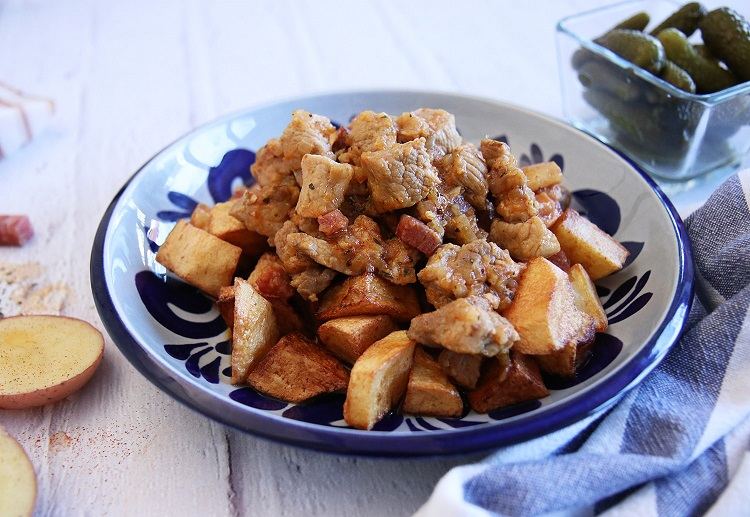

Brassói recept

Elkészítés
- A csirkemelleket vékony csíkokra vágjuk.A szalonnát kockára vágjuk, hagymát is felkockázzuk.
- Egy nagyobb serpenyőt felforrósítunk. Belerakjuk a szalonnát, ha kiolvadt a zsírja,
kiszedjük és félrerakjuk. A hagymát a forró zsíron egy kicsit megdinszteljük, és már
mehet is hozzá a husi. A tűzet mérsékeljük, és fedő alatt hagyjuk párolódni a mellet.
- Ha a hús elfőtte a levét(fedő nélkül), kevergetve rózsaszínűre pirítjuk.
- Ha megpirult a husink, fűszerezzük, és hozzáadjuk a konzerv paradicsomot, a
fokhagymát rányomjuk vagy reszeljük. 1 dl vizet is öntünk alá, hogy szaftos legyen,
megszórjuk 1 tk pirospaprikával a brassóit, még egyet rottyantunk rajta, és lezárjuk a
lángot.
- A burgonyát apróbb kockára vágjuk, zsiradékon kisütjük (ne legyen nagyon kiszárítva).
(Lehet mirelit burgonyát is használni, nem baj, ha csíkokra van vágva.)
- A sült krumplit, a sült szalonnapörcöt a brassóival összekeverjük, kóstoljuk és kész. Jó étvágyat!
Hozzávalók
A weboldal ahonnan szereztem a receptet:recept linkje